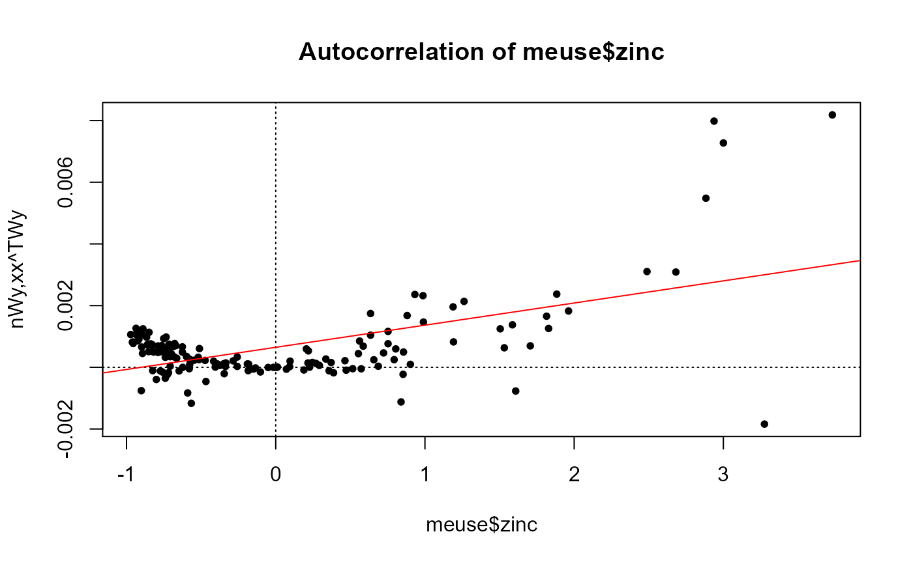
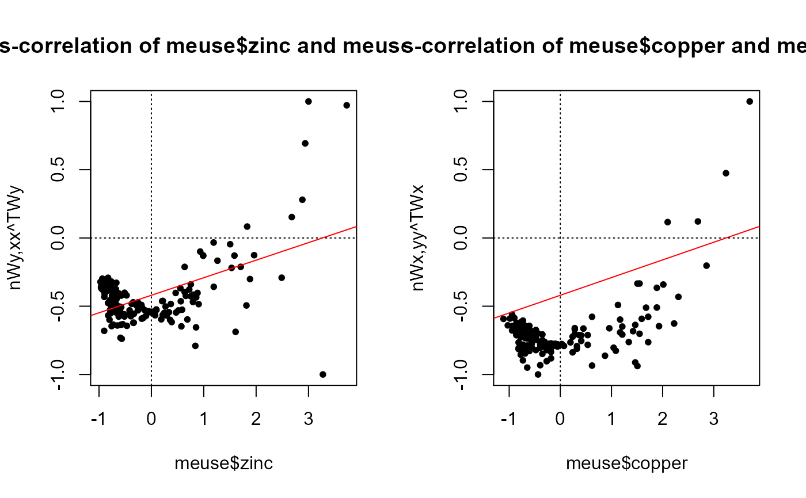

Autocorrelation plot (Anselin 1996), following Chen (2015), aka, Moran's-I plot (univariate or bivariate)
morans.plot( x, y = NULL, coords = NULL, type.ac = c("xy", "yx"), dist.function = "inv.power", scale.xy = TRUE, scale.morans = FALSE, ... )
| x | Vector of x response variables |
|---|---|
| y | Vector of y response variables |
| coords | A matrix of coordinates corresponding to [x,y] |
| type.ac | Type of autocorrelation plot ("xy", "yx") |
| dist.function | ("inv.power", "neg.exponent") |
| scale.xy | (TRUE/FALSE) scale the x,y vectors |
| scale.morans | (FALSE/TRUE) standardize the Moran's index to an expected [-1 to 1]? |
| ... | Additional arguments passed to plot |
A plot of the scaled variable against its spatially lagged values.
The argument "type" controls the plot for x influencing y (type="xy") or y influencing x (type="yx"). If y is not defined then the statistic is univariate and only the "xy" plot will be available. The linear relationship between x and its spatial lag (Wx) is indicative of the spatial autoregressive process, underlying the spatial dependence. The statistic can be autocorrelation (univariate or cross-correlation (bivariate). The quadrants are the zero intercept for random autocorrelation and the red line represents the trend in autocorrelation. The quadrants in the plot indicate the type of spatial association/interaction (Anselin 1996). For example the upper-left quadrant represents negative associations of low values surrounded by high and the lower-right quadrant represents negative associations of high values surrounded by low.
if y is not specified the univariate statistic for x is returned. the coords argument is only used if k = NULL. Can also be an sp object with relevant x,y coordinate slot (ie., points or polygons). If w = NULL, the default method for deriving spatial weights matrix, options are: inverse power or negative exponent. If scale.xy = FALSE it is assumed that they are already scaled following Chen (2015).
Chen., Y. (2015) A New Methodology of Spatial Cross-Correlation Analysis. PLoS One 10(5):e0126158. doi:10.1371/journal.pone.0126158
Anselin, L. (1996) The Moran scatterplot as an ESDA tool to assess local instability in spatial association. pp. 111-125 in M. M. Fischer, H. J. Scholten and D. Unwin (eds) Spatial analytical perspectives on GIS, London, Taylor and Francis
Anselin, L. (1995) Local indicators of spatial association, Geographical Analysis, 27:93-115
Jeffrey S. Evans <jeffrey_evans@tnc.org>
library(sp) library(spdep) data(meuse) coordinates(meuse) <- ~x+y # Autocorrelation (univariate) morans.plot(meuse$zinc, coords = coordinates(meuse))#>#># Cross-correlation of: x influencing y and y influencing x opar <- par(no.readonly=TRUE) par(mfrow=c(1,2)) morans.plot(x=meuse$zinc, y=meuse$copper, coords = coordinates(meuse), scale.morans = TRUE)#>#>morans.plot(x=meuse$zinc, y=meuse$copper, coords = coordinates(meuse), scale.morans = TRUE, type.ac="yx")#>#>